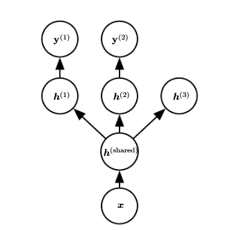
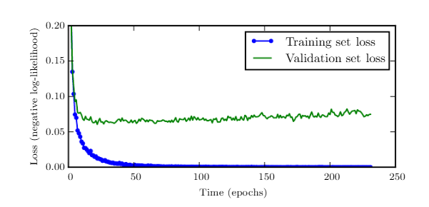
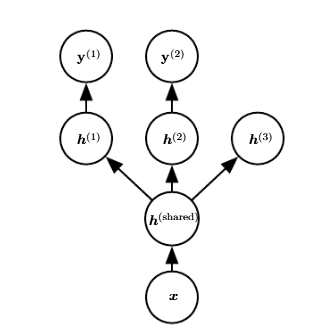
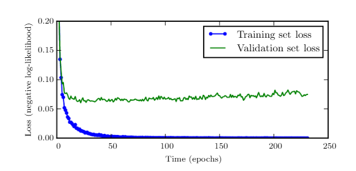

Deep Learning
Year of Publication: 2023
An introduction to a broad range of topics in deep learning, covering mathematical and conceptual background, deep learning techniques used in industry, and research perspectives.
“Written by three experts in the field, Deep Learning is the only comprehensive book on the subject.”
—Elon Musk, cochair of OpenAI; cofounder and CEO of Tesla and SpaceX
Deep learning is a form of machine learning that enables computers to learn from experience and understand the world in terms of a hierarchy of concepts. Because the computer gathers knowledge from experience, there is no need for a human computer operator to formally specify all the knowledge that the computer needs.
The hierarchy of concepts allows the computer to learn complicated concepts by building them out of simpler ones; a graph of these hierarchies would be many layers deep. This book introduces a broad range of topics in deep learning.
The text offers mathematical and conceptual background, covering relevant concepts in linear algebra, probability theory and information theory, numerical computation, and machine learning. It describes deep learning techniques used by practitioners in industry, including deep feedforward networks, regularization, optimization algorithms, convolutional networks, sequence modeling, and practical methodology; and it surveys such applications as natural language processing, speech recognition, computer vision, online recommendation systems, bioinformatics, and videogames.
Finally, the book offers research perspectives, covering such theoretical topics as linear factor models, autoencoders, representation learning, structured probabilistic models, Monte Carlo methods, the partition function, approximate inference, and deep generative models.
Deep Learning can be used by undergraduate or graduate students planning careers in either industry or research, and by software engineers who want to begin using deep learning in their products or platforms. A website offers supplementary material for both readers and instructors.
Chapter 1: Introduction
Overview: This chapter sets the stage for the book, providing a high-level introduction to deep learning and its significance in the field of artificial intelligence (AI). It explains how deep learning is a subfield of machine learning that leverages algorithms inspired by the structure and function of the brain, namely artificial neural networks. The resurgence of deep learning over recent years is explored, highlighting its success in tasks that were once considered too complex for traditional AI techniques. Deep learning's ability to automatically extract features from data has made it the dominant approach in many areas of machine learning, particularly in fields such as speech recognition, computer vision, and natural language processing (NLP). The chapter emphasizes the challenges and potential of deep learning, as well as its interdisciplinary nature, which spans across computer science, mathematics, and neuroscience.
Key insight
- Deep learning's role in revolutionizing AI.
- Real-world applications of deep learning and its success stories.
Sections
- What is deep learning?
- History of deep learning
- Who should read this book?
- Key concepts and organizations in deep learning
Chapter 2: Linear Algebra
Overview: Linear algebra is a foundational mathematical tool for deep learning.This chapter provides the essential concepts needed to understand how deep learning models process and transform data. Vectors and matrices are used to represent data and model parameters, and understanding matrix operations is critical for both the forward pass and backpropagation in neural networks. The chapter covers fundamental operations such as dot products, matrix multiplication, and inversion, which are all central to efficiently training and evaluating models. Eigenvectors and eigenvalues are introduced, particularly in the context of dimensionality reduction techniques like Principal Component Analysis (PCA). The importance of these concepts is discussed in relation to model optimization and performance.
Key insight
- How linear algebra is used to represent data and optimize model parameters.
- Understanding tensor operations and matrix factorization in deep learning models.
- The role of eigenvectors and eigenvalues in understanding network behavior.
Sections
- Scalars, vectors, matrices, and tensors
- Matrix operations
- Eigendecomposition and singular value decomposition
- Special matrices and their properties
Chapter 3: Probability and Information Theory
Overview: Deep learning often involves probabilistic models that are used to make predictions and quantify uncertainty. This chapter introduces the basic concepts of probability theory, such as random variables, distributions, and Bayes' Theorem. These concepts are essential when discussing the uncertainty of predictions made by models and for tasks such as classification and regression. Information theory is also discussed, particularly concepts like entropy and Kullback-Leibler divergence, which measure uncertainty and the distance between two probability distributions. These measures are vital for evaluating model performance, guiding training through methods like maximum likelihood estimation, and providing insight into regularization strategies.
Key insight
- Understanding the role of probability theory in deep learning models.
- How information theory is used to measure model uncertainty and efficiency.
- The relevance of entropy and KL divergence in the context of training deep learning models.
Sections
- Random variables and probability distributions
- Information theory basics
- Common probability distributions
Chapter 4: Numerical Computation
Overview: This chapter covers the numerical techniques required for training deep learning models. Deep learning models involve many computations, and efficient numerical computation is key to optimizing these models. The chapter discusses numerical issues such as floating-point arithmetic, precision, and stability, which are critical for ensuring that large models converge correctly during training. Techniques like gradient descent and its variants (stablehastic gradient descent, mini-batch gradient descent) are introduced as the primary methods for minimizing the loss function. The chapter also delves into how to handle large-scale data efficiently using matrix operations and parallel computation.
Key insight
- The importance of numerical stability and efficiency in training deep networks.
- Understanding optimization algorithms like gradient descent and its variants.
- How large-scale computations are handled with parallelism and hardware acceleration (GPUs).
Sections
- Overflow, underflow, and conditioning
- Optimization basics
- Gradients and automatic differentiation
Chapter 5: Machine Learning Basics
Overview: This chapter serves as an introduction to the broader field of machine learning, which underpins deep learning. It defines key concepts such as supervised learning, unsupervised learning, and reinforcement learning. Supervised learning is discussed in terms of classification and regression tasks, where the goal is to learn a mapping from inputs to outputs. Unsupervised learning is presented as a method of finding patterns in data without labeled outputs, such as clustering or dimensionality reduction. Reinforcement learning, where an agent learns by interacting with an environment and receiving feedback in the form of rewards, is also introduced. This chapter sets the stage for understanding how deep learning fits within the larger machine learning landscape.
Key insight
- The different paradigms of machine learning: supervised, unsupervised, and reinforcement learning.
- The concept of bias-variance trade-off and its impact on model generalization.
- Introduction to optimization and loss functions in the context of learning algorithms.
Sections
- The supervised learning framework
- Capacity, overfitting, and underfitting
- Regularization and hyperparameter tuning
Chapter 6: Deep Feedforward Networks
Overview: This chapter focuses on deep feedforward neural networks (also called multi-layer perceptrons or MLPs). These are the most basic type of neural network and form the foundation for more advanced architectures like convolutional and recurrent networks. The chapter explains the structure of feedforward networks, how data flows through them, and how they are trained using backpropagation. Three key point is how each layer of the network extracts increasingly complex features from the data, allowing the network to learn complex mappings from input to output. The chapter also addresses practical considerations, such as activation functions (ReLU, sigmoid), and discusses the challenges of training deep networks, such as vanishing gradients and the importance of initialization.
Key insight
- Understanding the architecture of feedforward networks and their role in deep learning.
- How backpropagation works to update network parameters.
- Practical challenges such as vanishing gradients and the need for proper weight initialization.
Sections
- Example of a deep feedforward network
- Learning XOR
- Gradient-based learning
Chapter 7: Regularization for Deep Learning
Overview: Regularization techniques are crucial for preventing overfitting, especially in deep learning models that have a large number of parameters. This chapter discusses various regularization methods that help ensure models generalize well to unseen data. Techniques like L1 and L2 regularization (weight decay) are introduced, along with dropout, which involves randomly deactivating units during training to prevent co-adaptation. The chapter also discusses data augmentation, early stopping, and batch normalization, which help improve the stability and robustness of deep learning models. Each of these techniques is explored in terms of its theoretical foundation and practical implementation.
Key insight
- How regularization prevents overfitting in deep learning models.
- The use of dropout, data augmentation, and early stopping.
- The importance of batch normalization in improving training stability.
Sections
- Parameter norm penalties
- Dataset augmentation
- Noise robustness
 



Chapter 8: Optimization for Training Deep Models
Overview: This chapter delves deeper into the optimization techniques used to train deep learning models efficiently. Gradient descent is introduced as the core optimization algorithm for minimizing the loss function, but the chapter goes beyond basic gradient descent by exploring advanced variants like stablehastic gradient descent (SGD), mini-batch gradient descent, and adaptive methods like Adam, RMSProp, and AdaGrad. The importance of choosing the right learning rate and optimization method is emphasized, along with strategies such as learning rate schedules and momentum to improve convergence. The chapter also discusses challenges like saddle points and local minima, and how modern optimization techniques address these issues.
Key insight
- The role of optimization algorithms in training deep learning models.
- How adaptive methods like Adam and RMSProp improve convergence.
- Techniques for tuning hyperparameters and managing learning rates.
Sections
- Challenges in optimization
- Stochastic gradient descent (SGD)
- Advanced optimization methods
Chapter 9: Convolutional Networks
Overview: This chapter introduces Convolutional Neural Networks (CNNs), one of the most important and widely used architectures in deep learning, particularly for image processing and computer vision. CNNs are designed to automatically and adaptively learn spatial hierarchies of features.
The chapter begins with the convolution operation, explaining how it differs from traditional fully connected layers and how it captures local spatial information. The chapter also covers the key building blocks of CNNs, including pooling layers, convolutional layers, and fully connected layers.
The practical applications of CNNs, such as image classification, object detection, and image segmentation, are discussed in detail.
Key insight
Sections
Chapter 10: Sequence Modeling: Recurrent and Recursive Nets
Overview: This chapter covers Recurrent Neural Networks (RNNs), a class of networks designed to handle sequential data. Unlike feedforward networks, RNNs allow information to persist, making them ideal for tasks such as time series forecasting, speech recognition, and natural language processing (NLP). The chapter explains the architecture of RNNs and the challenge of vanishing gradients during training. To address this, it introduces Long Short-Term Memory (LSTM) networks and Gated Recurrent Units (GRUs), which are more effective at retaining information over long sequences. Recursive neural networks, used for structured data like parse trees in language, are also briefly covered.
Key insight
- The role of RNNs in modeling sequential data and time-dependent tasks.
- How LSTM and GRU overcome the vanishing gradient problem.
- Applications of RNNs in NLP, speech recognition, and sequence prediction.
Sections
- Unfolding computational graphs
- Recurrent neural networks (RNNs)
- Recursive neural networks
Chapter 11: Practical Methodology
Overview: This chapter focuses on the practical aspects of training deep learning models. It emphasizes best practices for managing data, selecting models, and fine-tuning hyperparameters. Data preparation and preprocessing (such as normalization and augmentation) are highlighted as crucial steps in the machine learning pipeline. The chapter also discusses methods for evaluating model performance, including the importance of cross-validation, training-validation-test splits, and various performance metrics. It provides guidance on choosing the right loss function, regularization, and optimization methods based on the problem at hand.
Key insight
- Best practices for data preparation, augmentation, and preprocessing.
- The importance of cross-validation and proper train-test splits.
- Hyperparameter tuning and choosing the right loss function for specific tasks.
Sections
- Performance metrics
- Debugging strategies
- Experimentation
Chapter 12: Applications
Overview: This chapter surveys the diverse applications of deep learning across several domains, from computer vision and natural language processing to reinforcement learning and robotics. Key milestones in deep learning applications are covered, such as the advent of deep convolutional networks (CNNs) for image classification (e.g., AlexNet) and recurrent neural networks (RNNs) for sequence processing tasks like language modeling. In computer vision, deep learning has enabled breakthroughs in object detection, facial recognition, and image generation. In natural language processing, models like word embeddings, sequence-to-sequence architectures, and transformers have revolutionized machine translation and text generation. The chapter also explores applications in healthcare (such as medical image analysis), autonomous driving, and game-playing agents. It emphasizes the versatility and potential of deep learning in solving complex, high-dimensional tasks.
Key insight
- Overview of deep learning's success in computer vision, speech recognition, NLP, and reinforcement learning.
- Examples of successful real-world applications, such as image classification and language translation.
Sections
- Computer vision
- Speech recognition
- Natural language processing
Chapter 13: Linear Factor Models
Overview: In this chapter, the authors explore linear factor models, which are useful for dimensionality reduction and feature extraction. Principal Component Analysis (PCA) is introduced as a method for reducing the dimensionality of high-dimensional data while preserving the most important features. The chapter explains how PCA identifies the principal components (directions of maximum variance) and how these components are used to reconstruct the data. Independent Component Analysis (ICA) is discussed as a generalization of PCA, aimed at finding independent components rather than just uncorrelated ones. These techniques are foundational for simplifying complex data, reducing noise, and improving the efficiency of downstream tasks, including deep learning.
Key insight
- Linear factor models, like PCA and ICA, help simplify high-dimensional data.
- PCA focuses on maximizing variance while ICA seeks independent components.
- These methods are used in pre-processing and feature extraction for deep learning tasks.
Sections
- PCA and ICA
- Sparse coding
- Autoencoders
Chapter 14: Autoencoders
Overview: Autoencoders are unsupervised neural networks used for learning compressed, low-dimensional representations of data. This chapter introduces the architecture of autoencoders, consisting of an encoder (which compresses the input) and a decoder (which reconstructs the input). The chapter explores the training process, where the network minimizes the reconstruction error between the input and output. Variational Autoencoders (VAEs) are introduced as a probabilistic extension that introduces a distribution over the latent space and allows for generating new data samples. Autoencoders are commonly used for dimensionality reduction, denoising, and generating new data. The chapter also highlights the connections between autoencoders and other deep learning methods such as GANs.
Key insight
- Autoencoders learn efficient data representations by compressing and reconstructing inputs.
- VAEs introduce probabilistic elements for better generative capabilities.
- Autoencoders are widely used for tasks like data denoising and anomaly detection.
Sections
- Undercomplete and sparse autoencoders
- Contractive autoencoders
- Applications of autoencoders
Chapter 13: Representation Learning
Overview: This chapter explores representation learning, which is at the core of deep learning. It focuses on methods for learning meaningful data representations automatically, often eliminating the need for manual feature engineering. The chapter delves into several approaches to representation learning, including greedy layer-wise pretraining, transfer learning, and semi-supervised learning. It also discusses how to represent causal relationships in data and how distributed representations can improve generalization. The chapter explores the exponential benefits of deeper models and shows how providing clues about the underlying causes can lead to better representations. Finally, it illustrates the significance of representations for tasks like domain adaptation, improving model performance across different environments.
Key insight
- Greedy pretraining and transfer learning enable models to learn representations more efficiently, improving performance across tasks and domains.
- Semi-supervised learning helps disentangle causal factors in data, improving model robustness and interpretability.
- Deeper models lead to exponential improvements in representation learning and performance, making them essential for complex tasks.
Sections
- Distributed representations
- Representation learning objectives
Chapter 16: Structured Probabilistic Models for Deep Learning
Overview: This chapter bridges deep learning with probabilistic graphical models. Structured probabilistic models represent complex dependencies in data using graphs, such as Bayesian networks and Markov random fields. The chapter explains how these models are useful for structured data, where relationships between variables must be considered explicitly. For example, in sequence labeling tasks (like named entity recognition), structured models help predict sequences of labels while accounting for dependencies between them. The chapter also covers variational inference, a method for approximating intractable posterior distributions, and discusses how it can be applied to deep learning models.
Key insight
- Probabilistic models, like Bayesian networks and Markov random fields, are effective for structured data.
- Variational inference provides a way to handle complex probabilistic models in deep learning.
- Structured models can enhance tasks like sequence prediction and structured prediction.
Sections
- Graphical models
- Deep learning with structured models
Chapter 17: Monte Carlo Methods
Overview: Monte Carlo methods are a family of algorithms used to approximate solutions to problems that involve randomness and uncertainty. This chapter focuses on Markov Chain Monte Carlo (MCMC), a popular approach for drawing samples from complex distributions. MCMC methods, like the Metropolis-Hastings algorithm, are used in probabilistic modeling to estimate posterior distributions in Bayesian inference. The chapter explores the role of Monte Carlo methods in training deep models, including how they help estimate model uncertainty and perform approximate inference.
Key insight
- Monte Carlo methods are essential for handling randomness and uncertainty in deep learning models.
- MCMC allows for efficient sampling from complex distributions.
- These methods are important for tasks like Bayesian inference and uncertainty estimation.
Sections
- Sampling and importance sampling
- Markov chain Monte Carlo (MCMC)
Chapter 18: Hidden Markov Models
Overview: Hidden Markov Models (HMMs) are introduced as a way to model sequential data where the system being modeled is assumed to have hidden states that generate observable outputs. The chapter explains the forward-backward algorithm for computing the likelihood of a sequence of observations and the Viterbi algorithm for decoding the most likely sequence of hidden states. HMMs are widely used in speech recognition, part-of-speech tagging, and bioinformatics for tasks such as gene prediction. This chapter demonstrates how these models can complement deep learning techniques in tasks involving time series and sequential data.
Key insight
- HMMs model sequential data with latent states and observable outputs.
- The forward-backward and Viterbi algorithms are central to HMMs.
- HMMs are used in applications like speech recognition and bioinformatics.
Sections
- Energy-based models
- Techniques for approximating partition functions
Chapter 19: Deep Generative Models
Overview: Deep generative models are introduced as models that can generate new data points from learned data distributions. Generative Adversarial Networks (GANs) are discussed in detail, with an explanation of their adversarial training setup where a generator and a discriminator compete to create realistic data. The chapter also covers Variational Autoencoders (VAEs) and their role in probabilistic generative modeling. The applications of generative models in areas such as image generation, video synthesis, and data augmentation are discussed. Ethical challenges, such as the creation of deepfakes, are also addressed.
Key insight
- GANs and VAEs are popular deep generative models.
- These models can generate high-quality images, videos, and other types of data.
- Generative models have ethical implications, including the potential for misuse in creating misleading content.
Sections
- Variational methods
- MAP estimation
Chapter 20: Deep Learning Research Directions
Overview: The final chapter looks forward to the future of deep learning, focusing on emerging research directions. Self-supervised learning, where models learn from data without labeled examples is explored as a promising path for more efficient training. Meta-learning, or "learning to learn," is discussed as a way to improve model adaptation and generalization across tasks. The chapter also highlights the growing importance of explainable AI and the need for models to be interpretable and fair, particularly in sensitive areas like healthcare, finance, and law. Ethical considerations are increasingly central to deep learning research, as AI models impact society in profound ways.
Key insight
- Self-supervised and meta-learning are shaping the future of AI by making models more adaptable and efficient.
- Ethical concerns, including fairness and interpretability, are central to future research.
- Deep learning's future includes expanding into areas requiring transparency, accountability, and robustness.
Sections
- Boltzmann machines
- Variational autoencoders
- Generative adversarial networks (GANs)